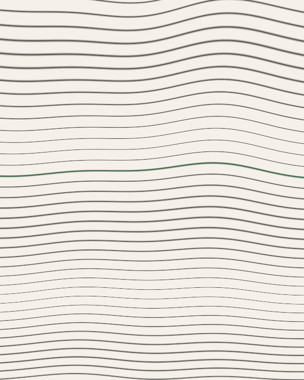

|
숨과 쉼 사이 · 격주 편지
|
ISSUE NO. 1
|
|
|
틈.
|
|
1화 · 2026년 7월 — 시각 편
|
|

|
|
커버 — 좋은 것은 언제나 가까이에 있다. 다만 볼 준비가 되어 있지 않을 뿐.
|
|
이번 호의 감각 — 초록을 본다는 것
오늘, 초록을
본 적이 있나요?
|
하루 종일 무언가를 보고 있었다는 걸, 하루가 끝날 때쯤에야 깨닫습니다.
모니터, 손안의 화면, 신호등, 또 화면. 눈은 쉬지 않고 움직였는데,
정작 눈이 쉬었던 순간은 없었습니다.
그래서 요즘 저는 스스로에게 이런 질문을 던집니다.
오늘, 초록을 본 적이 있는가.
거창한 질문이 아닙니다. 여행을 다녀와야 답할 수 있는 질문도 아니고요.
그저 오늘 하루, 초록빛 무언가에 시선이 잠시 머물렀는가를 묻는 것뿐입니다.
|
|
애쓰지 않아도 되는 색
|
초록은 이상한 색입니다. 화려하지 않은데 마음을 끕니다.
서두르지 않는데 눈이 자꾸 그리로 갑니다.
아마도 초록이 무언가를 증명하려 하지 않기 때문일 겁니다.
나무는 오늘 더 잘 보이려고 애쓰지 않습니다.
그저 거기, 어제와 같은 자리에 서 있을 뿐입니다. 그 무심함이 오히려 쉼이 됩니다.
어쩌면 우리는 오랫동안 무언가를 증명하며 살아왔는지도 모릅니다.
일에서, 관계에서, 심지어 쉬는 방식에서조차.
그래서 아무것도 증명하지 않는 존재 앞에 서면, 이상하게 마음이 놓입니다.
|
|
회복은 결심이 아니라, 스며드는 것
|
사람들은 종종 힐링을 찾아 멀리 떠납니다. 저는 그것이 조금 아쉽습니다.
회복이라는 건 대단한 결심 끝에 오는 것이 아니라,
오히려 일상의 틈 속에서 조용히 스며드는 것이라고 믿기 때문입니다.
바쁘다는 이유로 지나쳤던 것들은, 대개 사라진 게 아니라 그 자리에 그대로 있습니다.
우리가 잠시 눈을 돌리지 않았을 뿐이지요.
도심이라고 초록이 없는 것도 아닙니다.
회사 앞 화단, 하천을 따라 심긴 나무들, 창밖 이웃집 화분 하나.
그 초록은 오늘도, 우리가 보지 않는 사이 제자리에서 짙어지고 있습니다.
|
|
— 에디터 드림
|
|
|
|
01
|
이번 호의 감각 처방 — 시각
오늘, 5분만 초록을 봅니다
출근길, 지도가 알려주는 가장 빠른 길 대신 나무가 있는 길로 한 블록 돌아가 보세요.
혹은 점심 후 벤치에 앉아, 나뭇잎이 흔들리는 걸 그저 바라보세요.
사진을 찍을 필요도, 기록할 필요도 없습니다.
아무것도 남기지 않는 것이 이 시간의 본질에 가깝습니다.
본다는 행위, 그 자체로 충분합니다.
|
|
|
오늘 어디서 초록을 만나셨나요? 이 메일에 그냥 답장해 주세요.
당신이 멈춰 섰던 그 초록이, 다음 호 ‘어느 독자의 감각’에 익명으로 실립니다.
|
|
|
아직이라면, 오늘이 끝나기 전에 딱 5분만.
그것으로, 충분합니다.
|
|
NEXT — ISSUE NO. 2
촉각 편 — 마지막으로 나무껍질을 만져본 게 언제인가요?
|
틈 — 숨과 쉼 사이의 격주 편지
이 편지가 더는 필요 없다면 여기서 구독을 끊을 수 있어요.
미워하지 않아요. 감각은 언제든 다시 깨어나니까요.
|
|